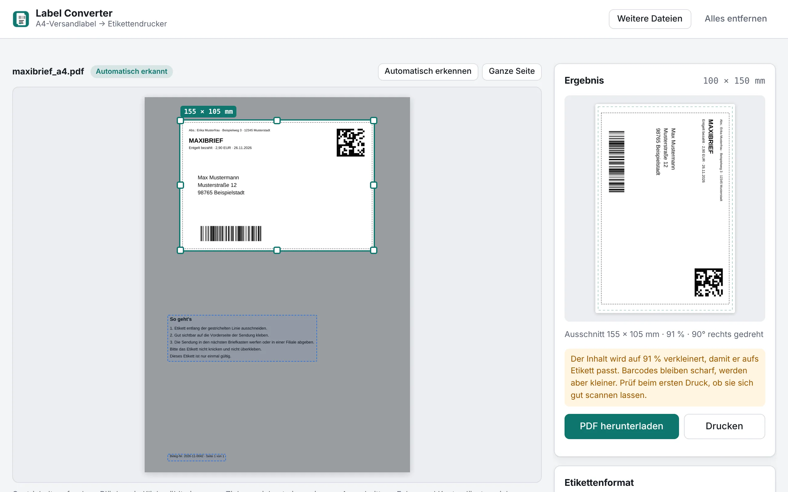

A4-Versandlabel aufs Etikett bringen
Die Chrome-Erweiterung schneidet das Etikett aus deinem A4-PDF (zum Beispiel für einen Maxibrief), dreht es passend und gibt es im Format deines Etikettendruckers aus, etwa 100 × 150 mm.
- Kostenlos, ohne Anmeldung
- Alles bleibt auf deinem Rechner
- Barcodes bleiben gestochen scharf

Installieren in vier Schritten
ZIP herunterladen und entpacken
Rechtsklick auf die Datei, dann „Alle extrahieren“ (Windows) bzw. Doppelklick (Mac). Es entsteht ein Ordner
label-converter.Erweiterungen öffnen
chrome://extensionsin die Adresszeile tippen und Enter drücken. In Edge heißt esedge://extensions.Entwicklermodus einschalten
Den Schalter „Entwicklermodus“ oben rechts (in Edge links) aktivieren.
Ordner laden
Auf „Entpackte Erweiterung laden“ klicken und den Ordner
label-converterauswählen. Der Konverter öffnet sich danach von selbst.
Tipp: Über das Puzzle-Symbol rechts neben der Adresszeile den Label Converter anheften. Ein Klick aufs Symbol öffnet ihn. Den entpackten Ordner nicht löschen oder verschieben, Chrome lädt die Erweiterung von dort.
So funktioniert’s
1. A4-Label ablegen
Das PDF einfach ins Fenster ziehen, auch mehrere auf einmal. PNG und JPG gehen ebenfalls.
2. Etikett wird erkannt
Der Ausschnitt mit dem Etikett wird automatisch gefunden. Passt er nicht, ziehst du einfach einen eigenen Rahmen. Auf Wunsch merkt sich der Konverter ihn für die nächsten Labels.
3. Drucken
Als PDF im Etikettenformat herunterladen oder direkt drucken. Mehrere Labels landen in einem PDF, jedes auf einer eigenen Seite.
Etikettenformate
- 100 × 150 mm · 4 × 6″, die meisten Thermodrucker
- 102 × 152 mm
- 104 × 159 mm · DYMO 4XL
- 105 × 148 mm · A6
- 62 × 100 mm · Brother QL
- Eigenes Format
Häufige Fragen
Werden meine Labels irgendwo hochgeladen?
Nein. Die Erweiterung arbeitet vollständig in deinem Browser und braucht keinen Internetzugriff. Sie fordert nur die Berechtigung, ihre Einstellungen zu speichern.
Bleiben Barcode und Frankiercode lesbar?
Ja. Das Etikett wird als Vektorgrafik übernommen, nicht als Foto, deshalb bleiben Codes scharf. Standardmäßig bleibt es in Originalgröße und wird nur verkleinert, wenn es sonst nicht aufs Etikett passt. In dem Fall zeigt der Konverter einen Hinweis. Prüf beim ersten Druck, ob sich die Codes gut scannen lassen.
Das Etikett wird nicht richtig erkannt. Was tun?
Auf der Seite einfach einen Rahmen um das Etikett ziehen oder einen der gestrichelt markierten Blöcke anklicken. Mit „Ausschnitt merken“ wird jedes weitere Label mit gleichem Aufbau genauso zugeschnitten.
Wie bekomme ich eine neue Version?
Neue ZIP herunterladen, entpacken und den alten Ordner label-converter damit ersetzen. Dann in chrome://extensions beim Label Converter auf den runden Pfeil (Neu laden) klicken.
Geht das auch ohne Installation?
Ja, über „Ohne Installation ausprobieren“ läuft derselbe Konverter direkt im Browser. Auch dort bleiben alle Dateien auf deinem Rechner. Die Erweiterung ist praktischer, weil sie mit einem Klick in der Symbolleiste aufgeht.